Project 2: Fun with Filters and Frequencies
Part 1: Fun with Filters
1.1 Convolutions from Scratch
With correlation, our kernel is slid pixel by pixel over an image and we compute the sum of products between the kernel and image values. However, with convolution, although the operation is also a cross-correlation operation, our filter (the kernel) is flipped both horizontally and vertically before being slid over the image.
This is a little confusing because most computer vision libraries may use cross-correlation
in their convolution functions. However, for part 1.1, my convolution function implementations do flip the kernel
horizontally + vertically by using the np.flipud (vertical flip) and np.fliplr (horizontal
flip) from the numpy library.
Compared to the built-in convolve2d function from the scipy library, my implementation
seemed to produce very similar results. I tried using a 3x3 box filter on my input image
and then convolving with the built-in function as well as my implementation with
2 for loops. Qualitatively speaking, the 2 images look very similar and produce a blurred
output image. That being said, there was a major difference
in runtime because my manual implementation took around 2.4 seconds whereas scipy's took
around 0.025 seconds, meaning mine was around 95x slower, and also a slight diffrence in
boundary handling because my implementation padded all sides with 0, whereas scipy's
default behavior involves sliding the kernel over edges even partially, which can lead to
additional rows and columns based on my image shapes of manual convolution = (1210, 907)
and Scipy convolution = (1212, 909).
Next, I tried convolving a picture of myself (from in front of the World Trade Center in NYC!) and with a 9x9 box filter. This resulted in a blurred image, likely because the filter of all 1's sums neighboring pixels and then averages them out, leading to a smoothing effect. With the finite difference operators, I also saw a dark to light gradient in the X direction and a light to dark gradient in the Y direction, which makes sense because the finite difference operators are designed to pick up changes in intensity in the X and Y directions, respectively. To elaborate, my picture with the operator in the X direction shows some vertical edges in white, while my picture with the operator in the Y direction shows some horizontal edges.
Original Image

At the World Trade Center
4 For Loops Convolution

3x3 box filter + 4 for loops convolution
2 For Loops Convolution

3x3 box filter + 2 for loops convolution
Scipy Convolution

3x3 box filter + Scipy convolution
2 For Loops Convolution

9x9 box filter + 2 for loops convolution
Scipy Convolution

9x9 box filter + Scipy convolution
Gradient X

Finite difference operator in X direction
Gradient Y

Finite difference operator in Y direction
Gradient X

Finite difference operator in X direction
Gradient Y

Finite difference operator in Y direction
1.2 Finite Difference Operator
For part 1.2, after calculating the gradient magnitude and binarizing the image by setting a threshold, I found that a threshold ranging from 0.05 to 0.20 showed major differences. For instance, at threshold = 0.05, I could see most of the edges outlining the buildings in the background of the image as well as some edges of the grass. However, there was also some noise in the background of the sky. At threshold = 0.10, there were still edges for buildings but less noise. At 0.20, there was little noise but buildings in the background appear imperceptible because their edges were not captured. Overall, I think a threshold of around 0.10 captures enough detail while filtering out noise.
Partial Derivative X

Cameraman x finite difference operator
Partial Derivative Y

Cameraman y finite difference operator
Gradient Magnitude

Cameraman gradient magnitude
Binarized Image (Threshold = 0.05)

Cameraman binarized edge image threshold = 0.05
Binarized Image (Threshold = 0.10)

Cameraman binarized edge image threshold = 0.10
Binarized Image (Threshold = 0.20)

Cameraman binarized edge image threshold = 0.20
1.3 Derivative of Gaussian (DoG) Filter
By using a Gaussian blur before calculating gradient magnitude with the finite difference operators, I actually see more edges preserved than in the binarized image while noise is also still reduced (no speckles of white). This may be because the blurring reduces high frequency noise in the image while still preserving edges, which are then picked up by the finite difference operators. In contrast, the binarized image without Gaussian blur has more noise and less clear edges.
Gaussian Blur Double Convolution

Gaussian blur and convolution
When taking the derivative of Gaussian filters and a single convolution instead of 2, I see the same thing!
Gaussian Blur Single Convolution X

Gaussian blur with Gaussian derivatives
Gaussian Blur Single Convolution Y

Gaussian blur with Gaussian derivative in Y
Gaussian Blur Single Convolution

Gaussian blur with Gaussian derivatives
Part 2: Fun with Frequencies
2.1 Image "Sharpening"
In terms of sharpening, we can achieve a sharper image by first blurring an image (I used a Gaussian filter), and then subtracting the blurred image from the original image. By doing: img - blurred, we're left with = high frequency edges. We can then add these high Frequencies to the original image to enhance the edges there, creating the effect that sharpening has on images. The visual representation of these steps can be seen in the series of Taj Mahal photos below!
Original Taj

Original image of Taj
Blurred Taj
Blurred with Gaussian image of Taj
High Frequency Taj
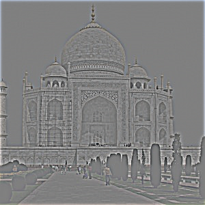
Original image of Taj
Sharpened Taj

Sharpened image of Taj
Additionally, we can vary how much we sharpen images by through weighting the edges from the high-frequency image differently. Higher weighting means more intense edges, and a greater sharpening effect. The opposite occurs with lower weighting. By changing a parameter to weigh the high-frequency edges (alpha), I experimented with values ranging from 0.5-3 to apply as weights to the high-frequency image based on the below pictures from SF!
Original SF

Original image of SF
Sharpened SF

Sharpened image of SF
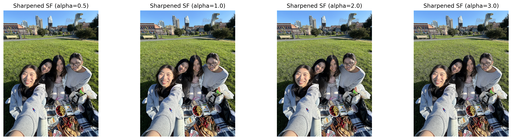
Sharpened SF image showing different alpha values for unsharp masking
For evaluation, after sharpening my image at Mauna Kea (a volcano in Big Island, Hawaii), I sharpened it again by blurring the sharpened image and then adding back high frequencies to this image. I believe the sharpening increased as the edge details of skin and hair appear more pronounced.
Original Mauna Kea

Original image of Mauna Kea
Sharpened Mauna Kea

Sharpened image of Mauna Kea
Twice-Sharpened Mauana Kea

Twice-sharpened image of Mauna Kea
2.2 Hybrid Images
Derek

Image 1 (high frequency)
Nutmeg

Image 2 (low frequency)
Derek + Nutmeg Hybrid
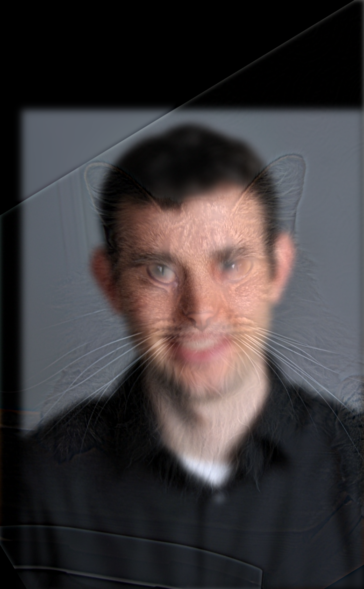
Derek up close, Nutmeg from far away
For my favorite image, I'd like to illustrate my hybridization of an image of milkbread and an image of a corgi! It took some experimentation with choosing frequency cutoffs as well as alignment points, but I ended up with: frequency cutoff sigma1 = 4, sigma2 = 8. In terms of alignment points, I chose the 2 centers of the top of the milkbread halves and for the corgi its (super cute) butt and then the center of the head. This was a little less straightforward than Derek and Nutmeg, probably because there were corresponding facial features that I could look for, so I mostly aimed to line up the general shapes of each figure.
Milkbread
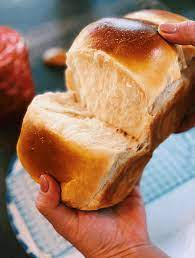
Image 1 original
Corgi
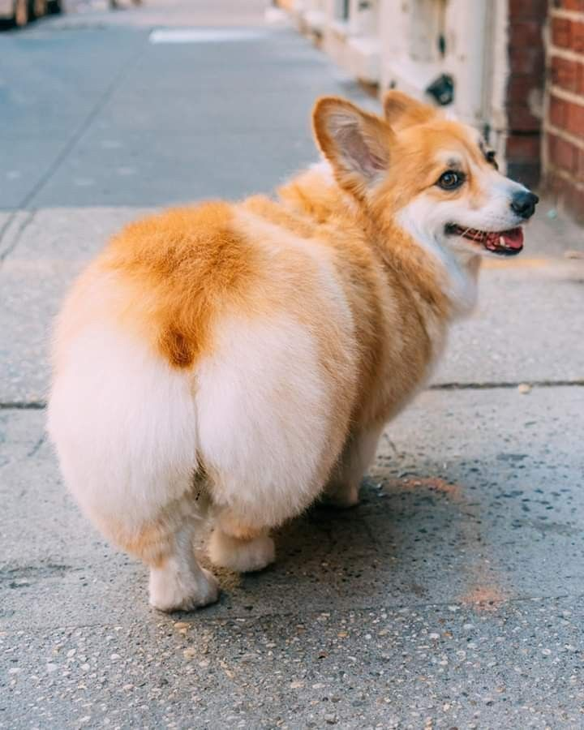
Image 2 original
Aligned Milkbread
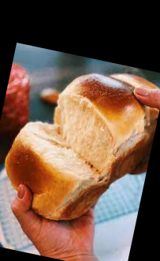
Image 1 aligned
Aligned Corgi
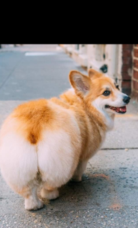
Image 2 aligned
Filtered Milkbread
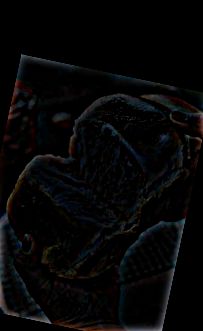
Image 1 filtered (high-frequency)
Filtered Corgi
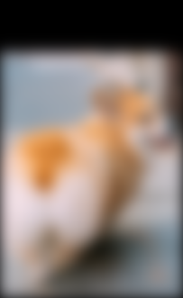
Image 2 filtered (low-frequency)
Milkbread + Corgi Hybrid
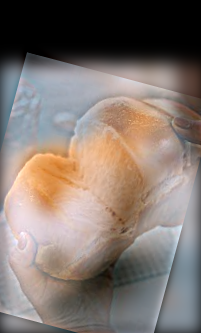
Derek up close, Nutmeg from far away
FFT Input Milkbread
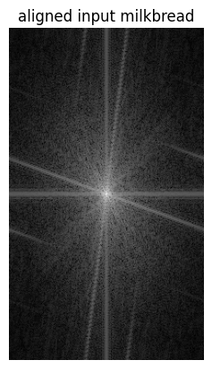
Log magnitude FFT
FFT Input Corgi
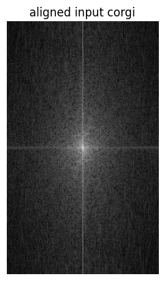
Log magnitude FFT
FFT High-Pass Milkbread
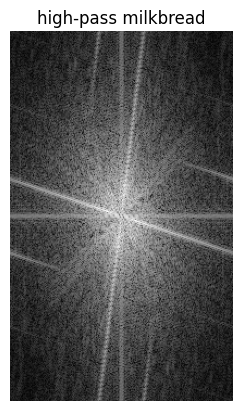
Log magnitude FFT
FFT High-Pass Corgi
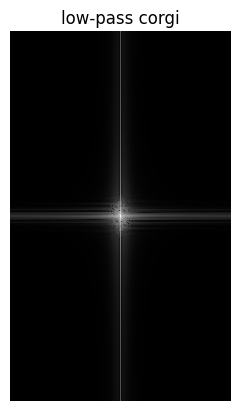
Log magnitude FFT
FFT Hybrid
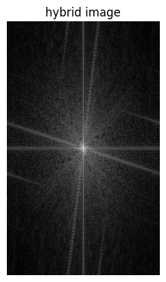
Log magnitude FFT
Stern Yi
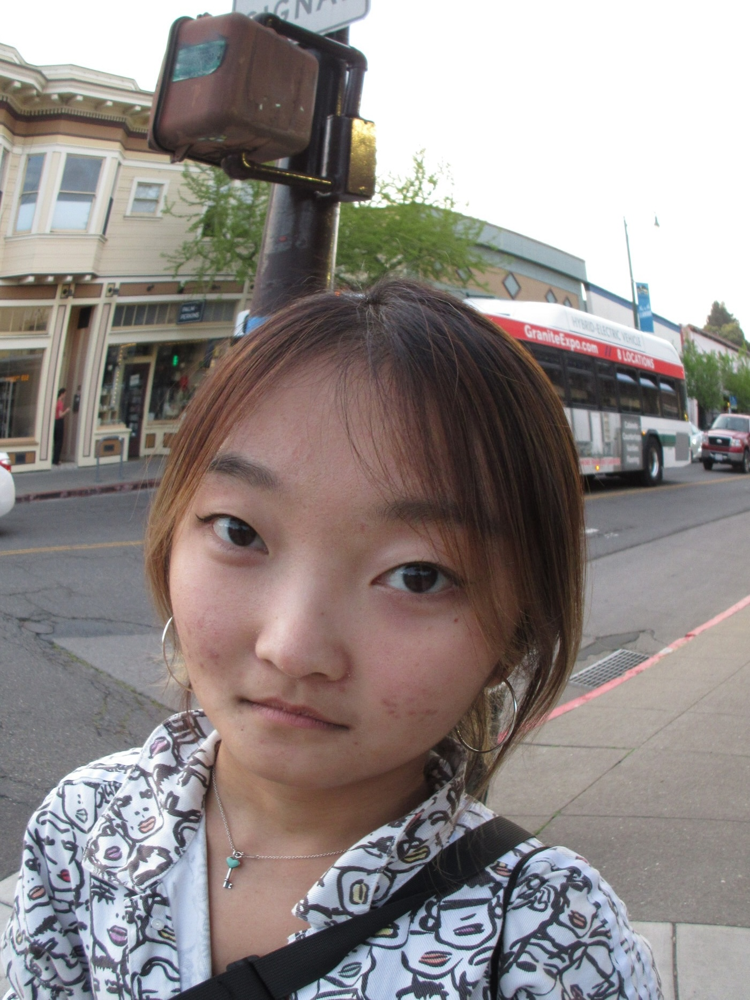
Image 1 (high frequency) of my friend Yi
Puzzled Yi
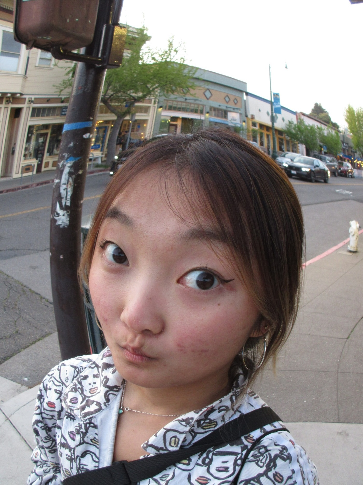
Image 2 (low frequency)
Stern + Puzzled Yi Hybrid
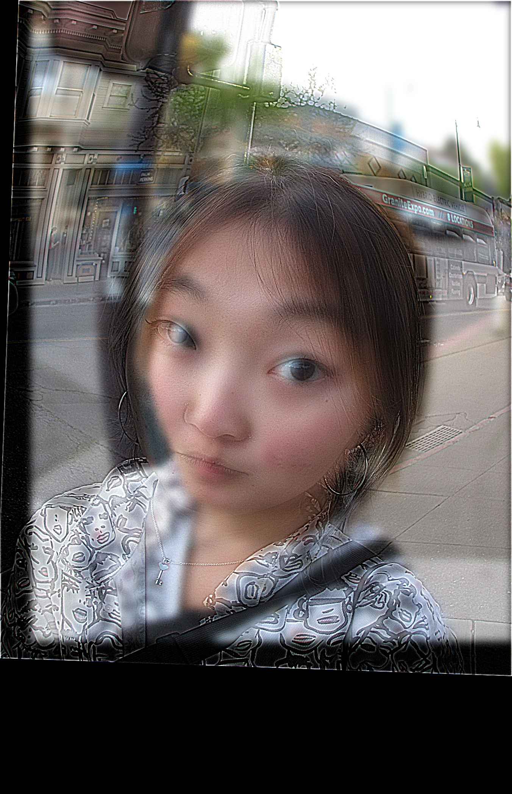
Stern up close, puzzled from far away
2.3 Gaussian and Laplacian Stacks & 2.4 Multiresolution Blending
For parts 2.3 and 2.4, after implementing Guassian and Laplacian stacks, I actually first tried implementing part 2.4 to apply the stacks and then multiresolution blending, and then went back to complete 2.3 and recreate Figure 3.42 from the SIGGRAPH 2006 paper.
Initially, I was stuck on getting past having a noticeable seam between blending the apple and orange to create the oraple image, but what helped significantly was (perusing Ed) and trying to create a transition zone in the mask itself rather than strictly have 1 values on the left (apple) side and 0s on the right (orange) side. In this way, the transition helped to make the seam between the two much more natural and less harsh. I included 2 pictures correlating to my initial blending attempt and my post-mask update with the transition zone.
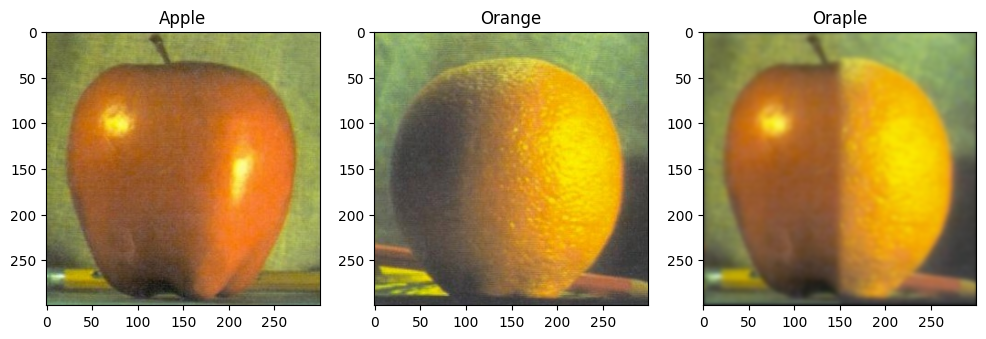
Multiresolution blending for oraple
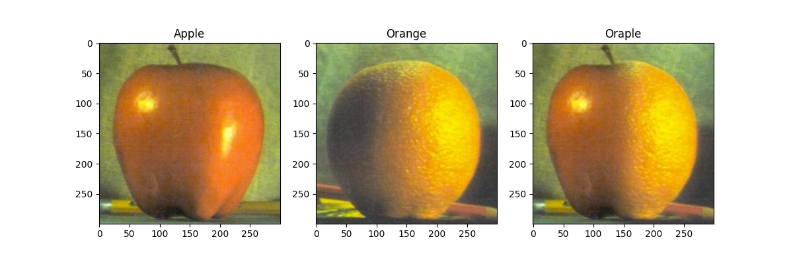
Multiresolution blending for oraple using a mask with a smoother transition zone
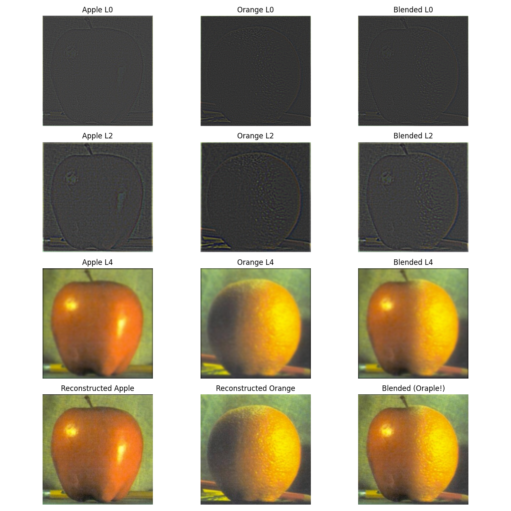
Levels of blending
Similarly for blending together images with irregular masks, I did a lot of photo album scrolling and experimenting to find some cool pictures that could work! I think the main challenge for this was developing the right mask, because initially I would try to update my mask coordinates based on my image inputs. However, what was super helpful was creating a visual plot to also show where the mask itself was landing specifically, and from there I could tune it to be more accurate and line up to where I chose in my images.
My first pair of images involved blending together a box of pastries that I got from Butter & Crumble, located in SF! I woke up at 6AM to make sure I could get the pastries before they sold out ... but it was worth it! I then combined a picture of a hojicha latte from a cafe trip later that day with my box of pastries, replacing the hazelnut praline espresso croffin in the center because they lined up similarly.
The next pair of images are from the Summit One Vanderbilt observatory deck in NYC and a picture from my birthday 2 years ago! I thought it was the perfect opportunity to try and make it look as though I were cutting into one of the balloons from the observatory deck. Originally, I also tried using a circular mask for this blend, however, due to the shape of the cake in image 2, I decided to create an elliptical mask instead to make the blending look more natural.
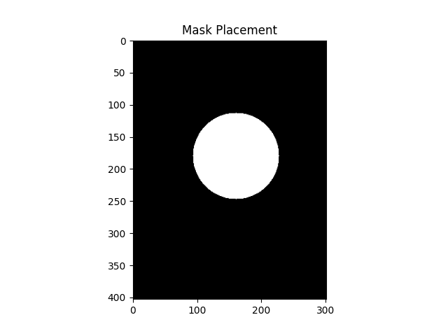
Pastry + latte circular mask placement
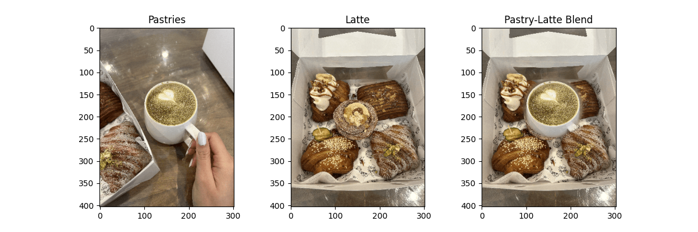
Multiresolution blending for pastry + latte
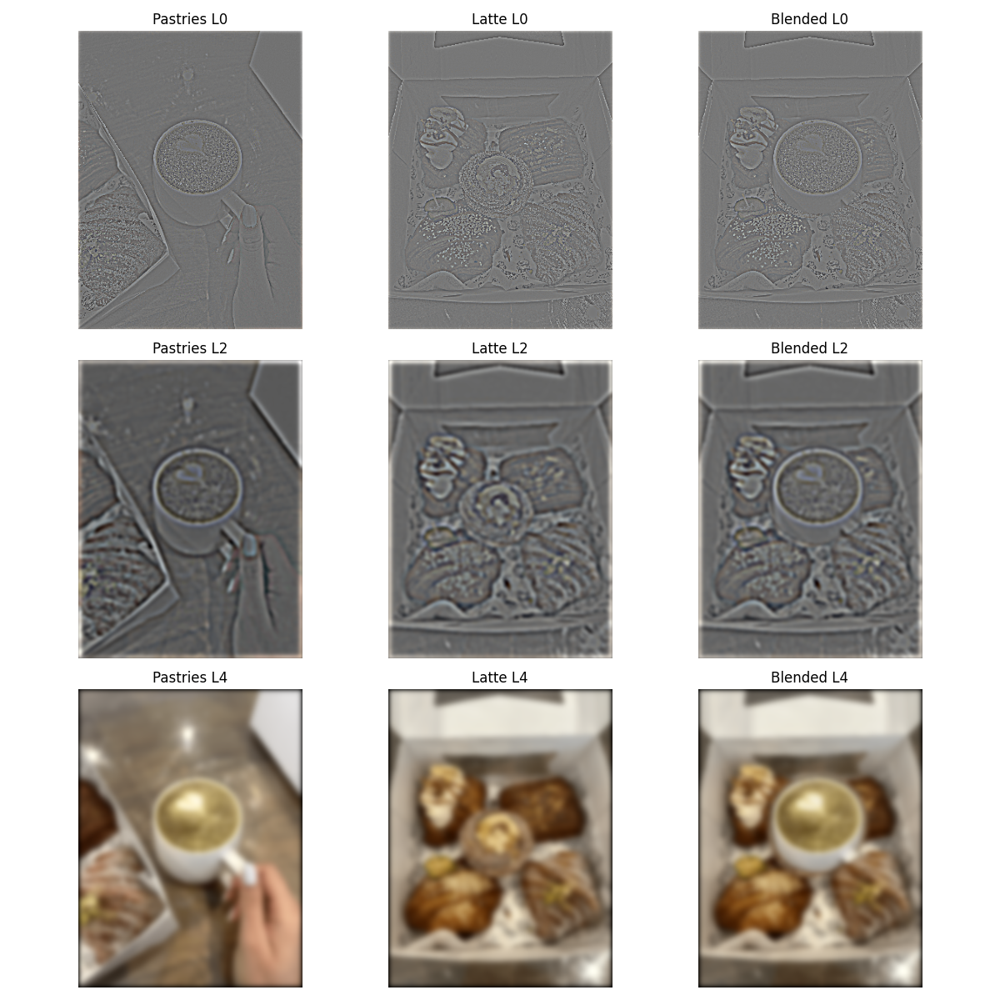
Levels of blending
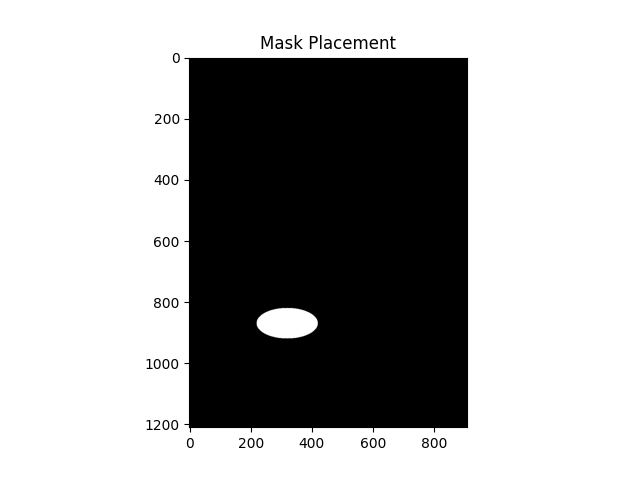
Balloon + cake elliptical mask placement
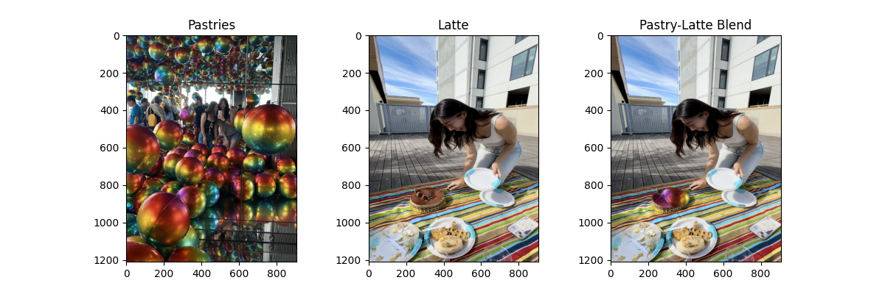
Multiresolution blending for balloon + cake
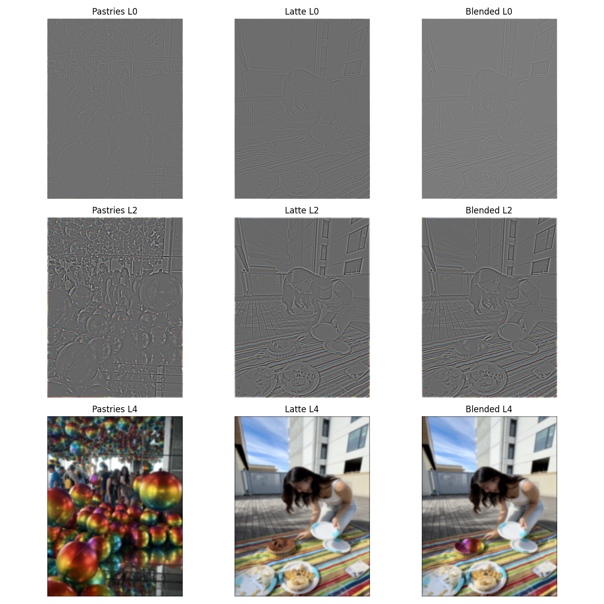
Levels of blending